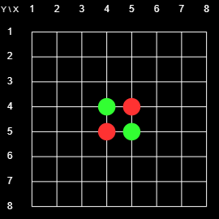
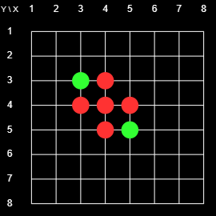
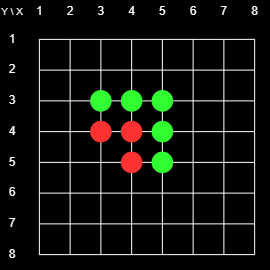

Scope
On this site you can play the game of Reversi in 2D or 3D, against a human, or one a number of AI players. You can also play a Tournament among AI players or run an Evolution to try to try to improve the ability of one of the AI players.
You can also develop your own AI players and see how they do against the built-in ones. The focus of this site, and the reason for creating is, to make it possible to play in 3D. But 2D is available also.
If you are up to it, or you feel adventurous, you can click right here (or on the main heading of this page) and start playing Reversi right away. Otherwise, read the information here and then proceed to the actual game page. It probably is best to open the game table in a different window and refer to it, and try things out, as you proceed. However, you can also see a static image of the game table here.
The Rules of the Game
The game of Reversi (also known as Othello) is usually played on an 8x8 2D Board, as shown in Figure 1. The novel feature of this online version is that you can play it in 3D. But the easiest way to understand the rules is to start with the 2D rules. The transfer of those rules to the 3D case will be straightforward.
  |
| Fig. 1: Initial Board |
The game is played by two players, usually denoted as Black and White. However, when I first played Reversi many years ago the players were Red and Green and I have used that color scheme on this site. The players have a supply of markers (or pieces) that are red on one side and green on the other. Thus the markers can be reversed (or turned or flipped) and switch color.
Figure 1 shows the initial state of the 8x8 2D Board. There is a grid with 8x8 = 64 intersections. At the start of the game there are red markers on 4-5 (horizontal-vertical) and 5-4, and green markers on 4-4 and 5-5. The players take flips placing markers on the board. Their goal is to enclose contiguous chains of the opponents pieces between two pieces of their own. If they can do that the pieces in the enclosed chain change colors. The player with the most pieces at the end wins. For example, at the beginning, Red could play on 4-3 or 3-4 and flip 4-4, or play on 6-5 or 5-6 and flip 5-5.
The following four boards illustrate a possible sequence of the first four moves. The picture shows the status of the board after the indicated move.
 |
| Red places on 3-4 and flips 4-4 |
|
|
 |
| Green places on 3-3 and flips 4-4 |
|
|
 |
| Red places on 4-3 and flips 4-4 |
|
|
 |
| Green places on 5-3 and flips 4-3 and 5-4 |
|
|
Here is a list of specific rules:
- Starting with Red, the players take turns placing their pieces. The player whose turn it is is the current player, the other player is the opponent.
- Any stone placed by the current player must flip at least one of the opponent's pieces.
- The current player must play a legal placement if possible. If no legal placement is available the current player forfeits the turn, and the opponent becomes the current player.
- After each placement all of the opponent's
pieces contained in enclosed chains must be flipped.
- The game ends when neither player can make a legal move. The player with more pieces wins.
- The game is a draw if both players have the same number of pieces at the end of the game.
To illustrate some aspects of the game, note the following:
- once a piece is placed it may change color but it never moves, and it never gets removed from the board.
- Neither player may skip a valid move, or choose not to flip some of the opponent's enclosed pieces.
- As the game proceeds the number of red and green pieces undergo large swings back and forth. This gives an advantage to the last player. Any, potentially large, gain on the last turn cannot be undone by the opponent.
- Since a player may not have have a legal placement, and thereby forfeit that turn, the opponent effectively is able to place more than one piece at a time, which of course is a great advantage.
Corners are very special. Once a player places piece in a corner it will never change color there. Moreover, any connected chain that ends at a corner, or a point, that is connected to the corner by a chain, can no longer change color. Much of the game strategy consists of gaining corners, and preventing the opponents from gaining corners. Similar considerations apply to edges.
- Usually a game consists of 60 (64 board points - the four points occupied from the beginning. But since a player may have to forfeit a turn it may take longer, and it may also end early with empty spots left on the board, but no legal placements being available for either player. For example, if it was Green's turn in the last board of the above sequence, Green could play 3-5. As a result, all pieces would turn green, neither player would have a legal move available, and the game would end with nine green pieces, and zero red pieces.
The 3D Game
The 3D game is played exactly like the 2D game, except that now there are more neighbors for each point, and the chains of enclosed pieces can run in more directions. In fact, the number of directions increases from 8 to 26 neighbors. To see this note that an interior point and its neighbors in the grid form a 3x3x3 cube which contains 27 points. The innermost point is not a neighbor of itself, so that point has a total of 33-1=27-1 = 26 neighbors, each corresponding to a potential chain of enclosed opposing pieces. (On the 2x2 board we have 32-1 = 8 neighbors, and in n dimensions we have 3n-1 neighbors. You can place pieces in a three dimensional array by using the interactive 3D display or in a two-dimensional cross section of the board.
User's Guide
You can start the game right here. If you wonder what a specific control does you can hover over it and see a one or two word explanation pop up. However, you may prefer to read the detailed information below to know what this software does and get an idea of how it works.
Game Boards and Controls
The Table with the controls, the 3D game board, and three Cross sections by default measures about 1631 by 1039 pixels. This is quite large (certainly unrealistic to be used on a smartphone) but it fits on most modern lap or desktop screens. You may need to change the resolution setting on your screen to accommodate the whole table. You can also shrink the size of the table in the line labeled Scale:. Click on "<" or ">". See below for more information.
The default game table, meant for playing 3D Reversi, consists of three columns. The first column contains the game controls. The second consists of three cross sections, each of which is perpendicular to one of the three axes. The third column contains the three-dimensional board. You can also toggle the display to play in just two dimensions (by clicking on the button in the second row of the control column). In that case the middle column (with the cross sections) disappears and the game board turns two dimensional.
Playing the Game
Players may be human or one of ten AI players. To play a game select the participants int the lines labeled Red: and Green: , and then clock on the Play button in undo the fifth row of the control column (and originally labeled Play. Pieces that are already marked are shown as red or green circles in the 2D displays, and as red or green balls in the 3D display. Also present by default are smaller red or green circles or Balls whose colors indicate whose turn it is, and where that player can legally place a marker.
The 3D Game Board
The 3D game board is moving in space initially to suggest that this is an interactive 3D display, and you can manipulate the game board to help you visualize the 3D game state. Specifically, you can:
- Left-click anywhere in the display to stop its movement. You can also toggle the movement by typing w or W anywhere in the game table.
- Left-drag the display to rotate the 3D board and view it from any angle.
- Middle-drag to zoom in or out.
- Right-drag to move the board.
- Cycle the grid from blank to parallel to the axes (the default) to showing all 26 directions,by using the keyboard command 'a'.
- Turn the board full-screen with the keyboard command 'f' or 'F'. Repeat, or use Escape key or the space bar to exit full-screen.
- Type a period or a question mark to see a complete list of available keyboard commands. Repeat to remove that list.
The 3D cross-sections
You can also place markers on the 2D intersections. There is one intersection for each axes. You can toggle a display of the axes in the 3D board by typing 'A'. The radio buttons underneath each 2D board let you choose which of the possible intersections is being displayed.
H3> The Control Column
This section contains a description of the available controls, listed from top to bottom.
- Reversi... This gives the current version number of the software (version 10 as of this writing) and indicates whether the engine is JavaScript (JS) or WASM (C++) based.
The number of workers indicated the maximum number of concurrent threads run on your machine.
- 3D/2D This button let's you switch back and forth between the 2D and the 3D display. You can accomplish the same using the keyboard command '2'.
- Click here... Click here to see this page.
- Play...This line contains four items:
- The actual play button. This starts or stops a single game. The label and color of the button change with the status of the game.
- Silence> on or off. By default the game board (2D or 3D) does not show the status of the boards while a tournament of an evolution is in progress, to increase speed. This button toggles this option on or off. For a single game, the status of the board is always shown.
Reset This button interrupts and resets any ongoing game, tournament, or evolution. It has no impact on settings like search depths, AI players, etc. To rest the game Table to all of its original settings reload the web page. To exit the game board close the web page.
N is the size of the board. Possible choices are 4, 6, or 8. The default is 6. Playing on a 4x4x4 board is very different from playing on a larger board since corners can be occupied in the first move. Playing on an 8x8x8 board takes a very long time since a typical game runs for 504 placements. As far as strategy and actual game play, a 6x6x6 board is sufficiently rich and there appear to be no general new features when going to an 8x8x8 board.
<0> >> These buttons let you scroll through ANY ONGOING game. You can also go to any move by entering its number in the text field. The button labeled >>" takes you back to the current game state. You can continue the game from any previous game state, and you can change parameters like the player or the search depth. To avoid accidentally messing up the game, using any of these facilities interrupts the game. When you are ready to continue from the currently displayed state press the Play button.
Red: and Green: The next two rows let you pick each player. The default is Human, the pieces are paced by left-clicking on an eligible spot on one of the game boards. You can also choose one of ten AI players, described below. The AI player proceeds by evaluating boards as described below, and looking a number of plies (half movers, i.e., placements by just one player) ahead. The number of D of plies is set with the menu on the right side of that row. The greater the depth the more time is spend by the AI. The choice of D has no impact on any human player.
The next two rows contain two textfields that give information about the current status and processes. The first (initially labeled Ready to Go ) gives the current score of any ongoing game, or states that an evolution or a tournament is in progress.
The second, larger and scrollable, textfield gives more detailed information. Any log output goes to the game console (invoke it with CTL-Shift-J) by default is duplicated in this textfield. You can turn of the duplication by clicking on the Logs button described below.
{kind=link}